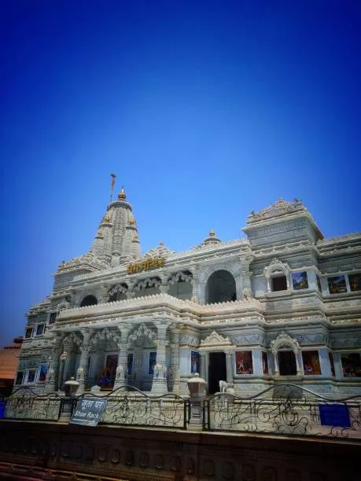
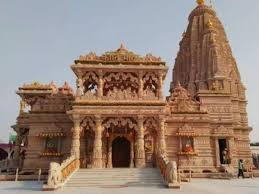

Prem Mandir - The Beauty of Vrindavan
Prem Mandir - the temple of divine love - a conscious elucidation of the magnificence of its creator, Jagadguru Shri Kripalu Ji Maharaj.
The incredible story behind Prem Mandir is lavishly told in this beautiful coffee table publication. The history surrounding its inception, the 12-year construction phase, the two televised discourses given by Kripalu Ji Maharaj from its main entrance and the first-year anniversary function are all included.
Prem Mandir, which translates to “Temple of Love,” is a renowned Hindu temple dedicated to Lord Krishna and his consort Radha. This majestic temple was envisioned and constructed by Jagadguru Shri Kripalu Ji Maharaj, a prominent spiritual leader and the founder of Jagadguru Kripalu Parishat.

Kirti Mandir - The Beauty of Vrindavan
Kirti Mandir - the temple of divine love - a conscious elucidation of the magnificence of its creator, Jagadguru Shri Kripalu Ji Maharaj.
The incredible story behind Prem Mandir is lavishly told in this beautiful coffee table publication. The history surrounding its inception, the 12-year construction phase, the two televised discourses given by Kripalu Ji Maharaj from its main entrance and the first-year anniversary function are all included.
Prem Mandir, which translates to “Temple of Love,” is a renowned Hindu temple dedicated to Lord Krishna and his consort Radha. This majestic temple was envisioned and constructed by Jagadguru Shri Kripalu Ji Maharaj, a prominent spiritual leader and the founder of Jagadguru Kripalu Parishat.